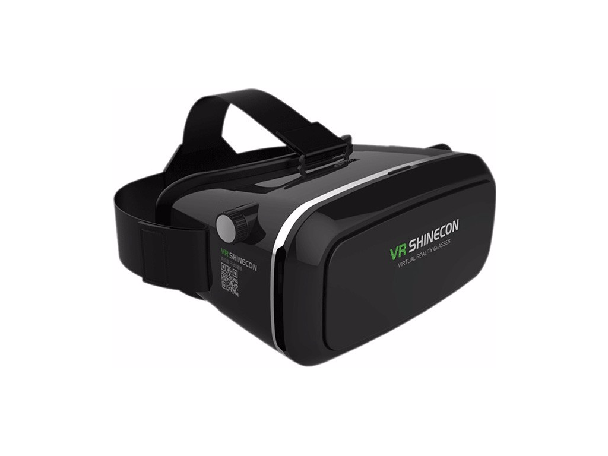
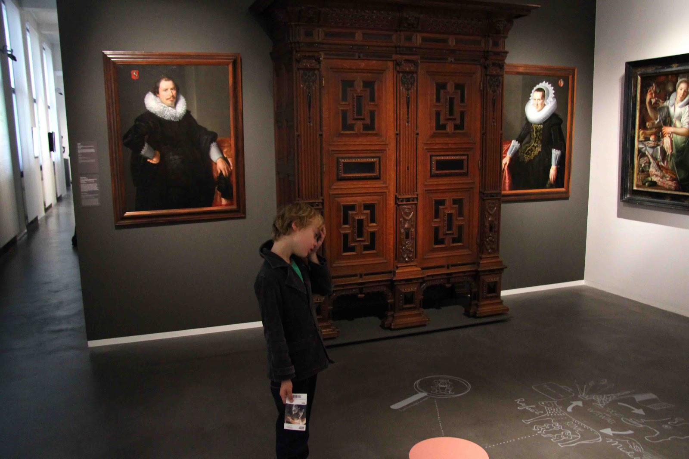
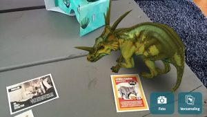
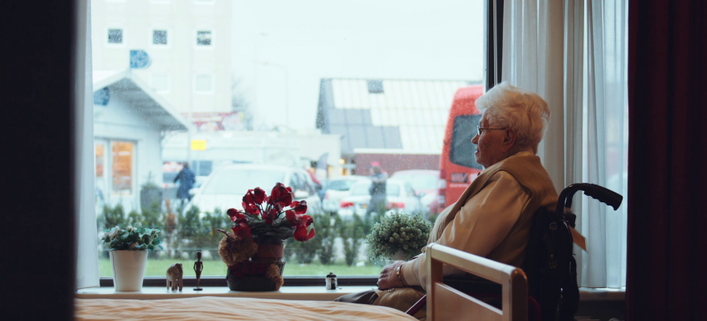
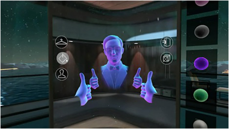
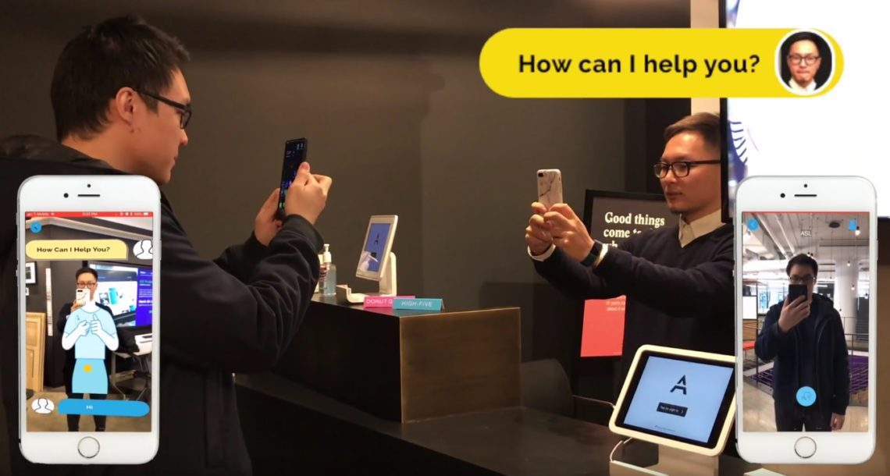
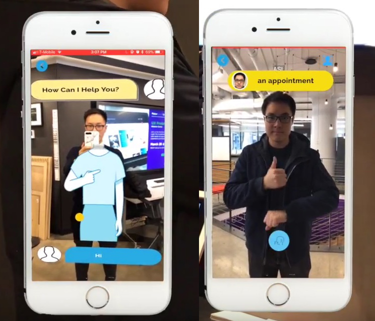

Education and/ or research (VR concept)
Het concept is een VR bril waarmee je de les kan volgen thuis. Als een student ziek thuis zit en er is een belangrijke
les dan zal hij of zij die missen. Door de les op te nemen kunnen ze via de VR bril te les volgen. Ze kunnen om zich heen
kijken en zien welke vragen andere studenten stellen. De student kan de les of hoorcollege volgen thuis en aantrekkingen maken.
Op deze manier kunnen alle lessen gevolg worden.

Art and/ or museums (AR concept)
In een museum kan verschillende soorten kunst staan. Het is niet voor elk persoon leuk om er naar toe te gaan.
Voor kinderen is een museum saai en niet leuk, maar daar kan iets op bedacht worden. Door AR in een museum te gaan gebruiken.
Kinderen kunnen door middel van een spel het leuker vinden om naar dingen te kijken in een museum. Het spel gaat als volg:
In het museum wordt door AR verschillende plaatjes geprojecteerd op de muren, plafon of vloer.
De plaatjes kunnen verstaan uit schilderen, voorwerpen of andere dingen van kunst. De kinderen moeten dan een lijst afgaan en de
plaatjes vinden. De plaatjes zullen na enkele seconde ergens anders geprojecteerd worden. Kinderen zullen hierdoor het hele museum
moeten gaan doorzoeken. De plaatjes kunnen ook gaan bewegen om meer interactie te creëren. Op deze manier vinden kinderen het toch leuk
om naar een museum te gaan en zullen ze wel alles gaan zien.


Sports/ movement (VR concept)
Ouderen zitten vaak binnen omdat ze niemand hebben om mee te lopen of leuke dingen mee te doen. Met de VR bril kan je een
vriend voor ze creëren waarmee ze dingen kunnen doen. Het kan allemaal in huis en ze kunnen opdrachten krijgen om buiten huis dingen te gaan doen.
Ouderen kunnen binnen gaan bewegen met de VR bril, zo blijven ze gezocht. Door een vriend voor ze te maken zal dat hen motiveren om te bewegen.
Met de VR bril op kunnen ze die persoon nadoen en vinden ze het leuk. Na het bewegen kunnen ze ook opdrachten krijgen om boodschappen
te gaan doen of een rondje door het park te lopen.


Het project Prototype AR App Translates Sign Language In Real Time is gemaakt door drie NYU studenten.
Dove of slechthorende mensen kunnen niet goed communiceren met mensen die geen gebaren taal kunnen. Er is een app gemaakt
om dove of slechthorende mensen te helpen. Door middel van AR werkt te app op de mobiele telefoon. Voor de horende mensen wordt
de gebarentaal vertaalt in worden. De dove of slechthorende mensen krijgen gebarentaal op hun scherm als iemand iets tegen hem zegt.
Het project is dit jaar gebracht. Het is gemaakt door Heng Li, Jacky Chen, and Mingfei Huang. Het zijn drie studenten aan de NYU.
Op dit moment is er alleen een prototype van het project gemaakt, het zal later verder uitgewerkt worden. Het idee erachter is
dat dove en slechthorende mensen meer met hun omgeving kunnen praten. Niet iedereen ken gebarentaal, daarom kunnen ze niet met iedereen praten.
Door deze app is dat in de toekomst wel mogelijk.
De link van het project is:
https://vrscout.com/projects/prototype-ar-app-translates-sign-language/


De onderwerp VR en AR waren vrij bekend bij mij. Ik heb vaker gehoord wat er allemaal gedaan wordt met VR en AR.
Het was erg interessant om nog meer van dit onderwerp te horen en te zien. Het bekenden van drie concepten was even moeilijk,
omdat ik nog nooit concepten met VR en AR heb verzonnen. De wereld van VR en AR zal in de toekomst groot worden,
er kan veel gedaan worden ermee en het kan mensen helpen. Ik zou het super mooi vinden als problemen opgelost kunnen worden met de VR en AR.
Het is een goede uitvinding waarmee je mensen in een andere wereld krijg en dingen kan laten zien.
Er worden super mooie projecten mee gedaan waardoor een hoop mensen de nieuwe wereld van VR en AR ontdekken.
Achteraf heb ik een hoop geleerd van het onderwerp. Ik weet nu nog meer ervan en zal zeker het gaan toepassen
in de toekomst met projecten die eraan komen. Het is erg leuk om mensen te laten zien wat je maakt door middel van VR en AR.